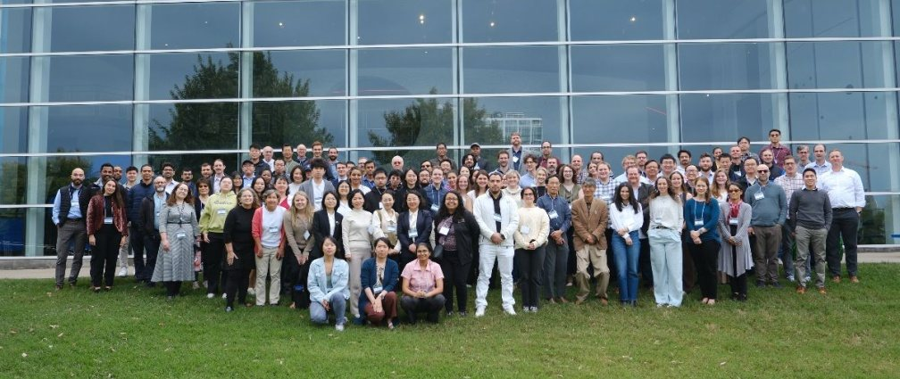
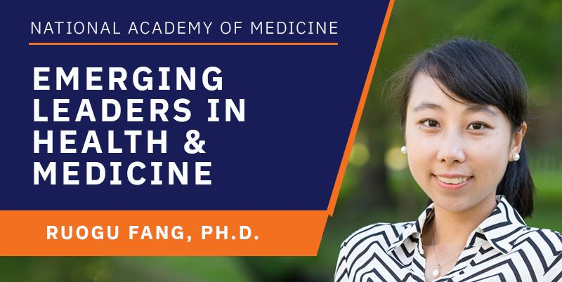
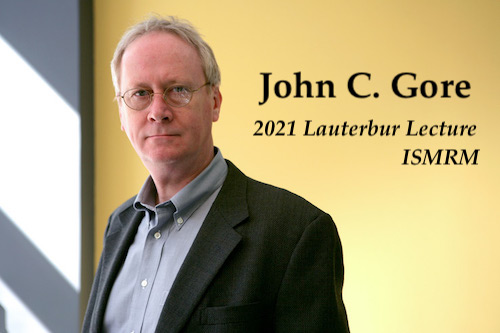

Upcoming
2027 · date to be announced
VCII Opening Retreat
A half-day event with the Advisory Board and key faculty to highlight work across Vanderbilt Health and launch the first collaborative projects.
Ask about attending →Events
Retreats, seminars, and working sessions for clinicians, scientists, engineers and partners.


2027 · date to be announced
A half-day event with the Advisory Board and key faculty to highlight work across Vanderbilt Health and launch the first collaborative projects.
Ask about attending →Invited talks, keynotes and named lectures by Dr. Gore and Dr. Fang.
Dr. Fang delivered an invited talk at the Montreal AI and Neuroscience (MAIN) Conference in Montréal.

Dr. Fang presented VCII's vision to the VUIIS community at the annual VUIIS Retreat and Symposium.
Dr. Fang delivered an invited talk at the Vanderbilt Center for Computational Systems Biology Retreat.
Dr. Fang delivered an invited talk at the BMES Annual Meeting in Orlando.

Dr. Fang gave the VISE Seminar at the Vanderbilt Institute for Surgery and Engineering. ↗
Dr. Fang lectured at the Vanderbilt AI Summer School.

Dr. Fang spoke at the National Academy of Medicine Emerging Leaders in Health and Medicine meeting.
Dr. Fang delivered an invited talk to the Machine Learning Medical Imaging Consortium (MaLMIC), hosted by the University of Toronto and OICR.
Dr. Gore delivered the Master's Forum lecture at Shanghai Jiao Tong University. ↗
Dr. Fang delivered an invited seminar at the Harvard Center for Machine Learning.
Dr. Fang delivered an invited talk at the Martinos Center (MGH, Harvard Medical School and MIT).
Dr. Fang delivered an invited talk to Harvard Medical School and Mass General Brigham Radiology.
Dr. Fang delivered an invited talk at Stanford Radiology.
Dr. Fang delivered an invited seminar to the UC Berkeley–UCSF Computational Precision Health program.
Dr. Gore gave the VUIIS Seminar Series talk at Vanderbilt. ↗
Dr. Gore delivered the keynote at SMI 2022, hosted by the Vanderbilt Department of Biostatistics. ↗
Dr. Gore gave the VISE Fall Seminar at the Vanderbilt Institute for Surgery and Engineering. ↗

Dr. Gore delivered the Lauterbur Lecture, named for the MRI co-inventor, at the ISMRM Annual Meeting. ↗
Dr. Gore delivered a plenary lecture at the World Molecular Imaging Congress in Honolulu. ↗